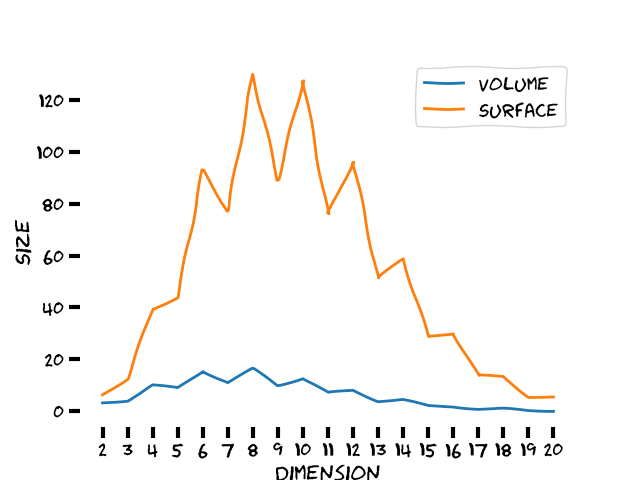

Første gang man legger merke til at den deriverte av arealet til en sirkel med hensyn på sirkelens radius er nøyaktig lik sirkelens omkrets tror man kanskje det er en tilfeldighet. Det er muligens ikke før man ser at det samme gjelder for en kule at begynner å mistenke at noe er på ferde.

Ved nærmere ettertanke er dette nødt til å holde for alle kuler av endelig dimensjon $n$. Hvis $S_n(R)$ og $V_n(R)$ er henholdsvis overflaten og volumet til en $n$-dimensjonal kule må
\[
  \frac{d}{dR}V_n(R) = S_n(R)
\]
siden det som legges til kulens volum ved en ørliten endring i radius $\delta R$ er nøyaktig overflaten $S_n$ multiplisert med en ørliten tykkelse $\delta R$. La oss nå introdusere to konstanter $C_n$ og $D_n$ som er slik at $S_n(R)=C_{n-1} R^{n-1}$ og $V_n(R)=D_n R^n$. Vi akn tenke på $C_{n-1}$ og $V_n$ som henholdsvis overflatestørrelsen og volumet til den $n$-dimensjonale enhetskulen. Det betyr at vi må ha
\[
S_n = C_{n-1} R^{n-1} = \frac{d}{dR}V_n(R) = \frac{d}{dR} D_n R^n = n D_n R^{n-1}.
\]
En ekvivalent måte å si dette på er at volumet til enhver $n$-dimensjonal kule med radius $R$ kan skrives som summen av alle (uendelig) tynne kuleskall med radius mindre enn $R$.

Dette er et passende tidpunkt å lege merke til at volumet til en $n$-dimensjonal kule med radius $R$ er summen av alle infinitesimale $n$-dimensjonale volumelementer $d^nx$ som er slik at $|\pmb{x}|=R$. Vi vet at de $n-2$ første integralene gir volumet av en $n-2$-dimensjonal kule med radius $R^2-x^2-y^2$ der $x$ og $y$ er de gjenværende integrasjonsvariablene. Altså har vi
\[
\begin{align}
  V_n(R)
  &= \int d^nx
  = \int_0^R \int_0^{2\pi} V_{n-2}\left(\sqrt{R^2-x^2-y^2}\right) dxdy \\
  &= \int_0^R \int_0^{2\pi} V_{n-2}\left(\sqrt{R^2-r^2}\right) r d\theta dr \\
  &= 2\pi D_{n-2} \int_0^R  \left(R^2-r^2\right)^\frac{n-2}{2} r dr \\
  &= 2\pi D_{n-2}R^n \int_0^1  \left(1-y^2\right)^{\frac{n}{2}-1} y dy \\
  &= 2\pi D_{n-2}R^n \int_0^1  x^{\frac{n}{2}-1} \frac{1}{2}dx \\
  &= 2\pi D_{n-2}R^n \frac{1}{n} \left[ x^\frac{n}{2} \right]_0^1 \\
  &= 2\pi D_{n-2}R^n \frac{1}{n}
\end{align}
\]
for $n>2$. Vi sitter altså med to relasjoner:
\[
\begin{align}
  C_{n-1} &= nD_n \\
  D_{n} &= \frac{2\pi}{n}D_{n-2}.
\end{align}
\]
Det betyr at enhetskuler med jevn dimensjon har volum
\[
  \begin{align}
    D_{2k} &= \frac{(2\pi)^{k-1}}{(2k)(2k-2)(2k-4)...6\cdot 4} D_2 \\
           &= \frac{(2\pi)^{k-1}}{2^{k-1} k!} \pi
            = \frac{\pi^k}{ k!}
  \end{align}
\]
ettersom $D_2=\pi$. Siden $D_3 = 4\pi/3$ må enhetskuler av odd dimensjon ha volum
\[
  \begin{align}
    D_{2k+1} &= 2\frac{(2\pi)^k}{(2k+1)(2k-1)(2k-3)... 7 \cdot 5 \cdot 3} \\
             &= 2\frac{(2\pi)^k (2k)(2k-2)(2k-4)...4\cdot 2}{(2k+1)(2k)(2k-1)(2k-2)...  5 \cdot 4 \cdot 3 \cdot 2} \\
             &= 2\frac{(2\pi)^k 2^k k! }{(2k+1)!}
              = 2\frac{k!(4\pi)^k }{(2k+1)!}.
  \end{align}
\]
Dette betyr at kuler med radius $R$ av dimensjon $n$ har volum
\[
  V_n(R) =
  \begin{cases}
    2\frac{k!(4\pi)^k }{(2k+1)!}R^{2k+1} & \text{ for } n=2k+1 \\
    \frac{\pi^k}{ k!}R^{2k} & \text{ for } n=2k \\
  \end{cases}
\]
og areal
\[
  S_n(R) =
  \begin{cases}
    2\frac{k!(4\pi)^k }{(2k)!}R^{2k} & \text{ for } n=2k+1 \\
    2\frac{\pi^k}{(k-1)!}R^{2k-1} & \text{ for } n=2k \\
  \end{cases}.
\]
Det som skjer er altså at både volumet og overflatearealet vokser med dimensjonen, helt til de når en maksimalverdi som avhenger av radien $R$. For dimensjoner som er større enn den som gir maksimalverdien avtar både volum og areal. For kuler der antall dimensjoner går mot uendelig går altså både volum og areal mot null. Under er et plott av volum og areal til enhetskulen som funksjon av dimensjonen:




<!--  -->
